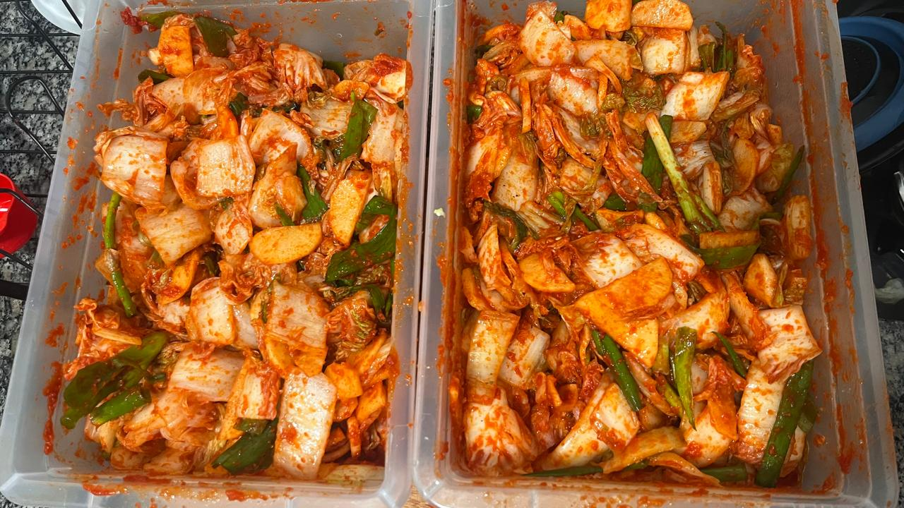

6 Fermentados
6.1 Picles em conserva
Ingredientes
- 3,6 kg de pepinos
- 12 dentes de alho
- 1 cebola
- 720 ml de vinagre branco destilado
- 720 ml de água
- 60 ml de sal
- 120 ml de açúcar
- 1 punhado de semente de coentro
- 1 punhado de grãos de pimenta-do-reino
Modo de preparo
Comece lavando e secando muito bem quatro potes de vidro de aproximadamente 950 ml cada, junto com suas tampas.
Em seguida, corte os pepinos em quartos no sentido do comprimento e acomode-os bem apertados dentro dos potes de vidro limpos. Coloque 3 dentes de alho e cerca de 60 ml de cebola fatiada em cada pote.
Em uma panela, adicione o vinagre, a água, o sal, o açúcar, o coentro e os grãos de pimenta-do-reino. Misture bem com um batedor até que tudo esteja completamente dissolvido. Distribua o líquido de forma uniforme entre os quatro potes.
Feche bem os potes e, usando uma pinça própria para conservas, coloque-os cuidadosamente em banho-maria a 85 °C por 30 a 40 minutos.
Passado esse tempo, retire os potes do banho-maria com a pinça e deixe esfriar sobre um pano. Você deve ouvir um “estalo” conforme esfriam, indicando que os potes foram selados corretamente e podem ser armazenados em local fresco e escuro para conservação de longo prazo.
6.2 Kimchi
Ingredientes (1º Preparo)
- 1 acelga
- 1/2 xícara de sal
Ingredientes (2º Preparo)
- 1 nabo pequeno
- 1 colher de sopa de açúcar e sal
Ingredientes (3º Preparo)
- cebolinha, picada grande
Ingredientes (4º Preparo)
- 1 maça picada
- 1 cebola picada
- 1 colher de sopa cheia de alho picado
- 1 colher de chá de gengibre picado
- 1 colher de sopa de açúcar
- 3 colheres de sopa de molho de peixe
- 1/2 colher de sopa de sal
- 4 colher de sopa de pimenta coreana
- água
Modo de preparo
Corte a acelga em pedaços grandes. Adicione todo o sal, espalhando bem por todos os pedaços. Deixe descansar por 1 hora. Em seguida, lave bem para retirar o excesso de sal e deixe escorrer por mais 1 hora, até eliminar o máximo de água possível.
Corte o nabo em pedaços médios. Misture com o sal e o açúcar e deixe descansar por 1 hora, para que solte todo o excesso de água. Após esse tempo, descarte o líquido liberado.
Corte a cebolinha em pedaços grandes e reserve.
Em um processador ou liquidificador, coloque todos os ingredientes do 4º preparo e bata até formar uma pasta homogênea.
Com a acelga já bem escorrida, junte o nabo e misture. Espalhe a pasta de pimenta por todos os pedaços, garantindo que fiquem bem envolvidos. Acrescente a cebolinha, misture novamente e transfira para um pote hermético previamente esterilizado. Deixe fermentar fora da geladeira por 24 horas. Após esse período, conserve na geladeira.

O kimchi pode ser fermentado fora da geladeira por até 2 dias, mas é importante deixar pelo menos quatro dedos de espaço livre até a tampa, para evitar que o pote estoure.
6.3 Picles de Alho com Endro
Ingredientes
- 450 a 900g de pepinos
- 4 a 5 dentes de alho, descascados
- 60 ml (1/4 de xícara) de cebola fatiada
- 1 punhado de endro ou flores de endro
- Vinagre branco
- Água
- 4 colheres de chá de sal marinho
- 4 colheres de chá de açúcar
Modo de preparo
- Corte os pepinos como preferir.
- Em um pote de vidro esterilizado de aproximadamente 950 ml, coloque os pepinos, o alho, a cebola fatiada e o endro.
- Preencha o pote até a metade com vinagre. Em seguida, complete o restante com água.
- Despeje apenas o líquido em uma panela. Acrescente o açúcar e o sal e leve ao fogo baixo, aquecendo levemente até que o sal e o açúcar se dissolvam.
- Despeje a salmoura quente sobre os pepinos, feche bem o pote e identifique com uma etiqueta.
- Depois de esfriar, leve à geladeira.
- Deixe curtir por pelo menos 1 dia para realçar bem os sabores.
6.4 Picles Agridoce (Bread & Butter Pickles)
Ingredientes
- 450 a 900g de pepinos
- 1/4 de xícara de cebola fatiada
- 1 xícara de açúcar
- 1 xícara de vinagre branco destilado
- 1/2 xícara de água
- 1 colher de chá de sal
- 1 colher de sopa de grãos de pimenta-do-reino preta
- 1 colher de chá de sementes de coentro
Modo de preparo
- Corte os pepinos como preferir.
- Em um pote de vidro esterilizado, coloque os pepinos fatiados e a cebola fatiada.
- Em uma panela, adicione o açúcar, o vinagre, a água, o sal, os grãos de pimenta-do-reino e as sementes de coentro. Leve ao fogo até ferver.
- Desligue o fogo e deixe esfriar por cerca de 1 minuto.
- Despeje a salmoura quente sobre os pepinos, feche bem o pote.
- Depois de esfriar, leve à geladeira.
- Deixe curtir por pelo menos 1 dia para realçar bem os sabores.
6.5 Picles Meio Azedo (½ Sour Pickles)
Ingredientes
- 450 a 900g de pepinos.
- Água
- Sal
Modo de preparo
- Corte os pepinos
- Coloque os pepinos em um pote de vidro limpo e esterilizado.
- Coloque o pote com os pepinos sobre uma balança de cozinha e zere (tara) a balança.
- Complete o pote com água até o topo. Anote o peso da água em gramas.
- Pegue esse valor e multiplique por 0,04. O resultado será a quantidade correta de sal, em gramas, que você deve usar.
- Zere novamente a balança e adicione ao pote a quantidade de sal calculada.
- Feche bem o pote e agite para que o sal se dissolva e se distribua por todo o líquido.
- Deixe fermentar em temperatura ambiente por 1 a 2 dias.
- Após a fermentação, leve à geladeira e está pronto para consumir.
6.6 Picles Azedo (Full Sour Pickles)
Ingredientes
- 450g de pepinos
- Água
- Sal
Modo de preparo
- Corte os pepinos
- Coloque os pepinos em um pote de vidro limpo e esterilizado.
- Coloque o pote com os pepinos sobre uma balança de cozinha e zere (tara) a balança.
- Complete o pote com água até o topo e anote o peso da água em gramas.
- Pegue esse valor e multiplique por 0,05. O resultado será a quantidade correta de sal, em gramas, que você deve usar.
- Zere novamente a balança e adicione ao pote a quantidade de sal calculada.
- Feche bem o pote e agite para que o sal se dissolva e se distribua por todo o líquido.
- Deixe fermentar em temperatura ambiente por 3 a 5 dias, de acordo com sua preferência:3 dias: sabor menos fermentado / 5 dias: sabor mais intenso e ácido
- Após a fermentação, leve à geladeira e consuma quando quiser.